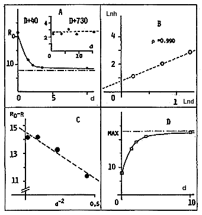

|
 |
|
Fig. 1. An algebraic study of the response (Ri) of glucose concentrations at D + 40 according to the distance (di) to the epicenter of the U.E.A = natural units (the response at D + 370 is given for comparison). B = Hill plot (see text). C = differential response versus d-2. D = theoretical differential response according to distance d. |
Plotting dn versus R/dn with the upper 2 and 3 points give a fairly good estimation of Rmax = 15.0 à 0.7 units (nmol per mg). Then, the Hill plot:
ln[Ri/(100 - Ri)] = nln di- ln(L) (2)
illustrated by Figure 1B gives n = 2.00 and L = 0.65 m. This reveals that the response varies according to d-2, like most electromagnetic events. Accordingly, roughly representing the results as (Ro- R) versus d-2 would have given a fairly linear plot (p = -0.97 1; p(t)= 0.02; b = -6.59: Figure 1C), i.e.a much better correlation than using natural units (p = -0.580!). Then the theoretical curve would actually be:
Ri= 14.95 + 8 di2/(0.65 + di2) (3)
as illustrated on Fig. 1D.
Nothing similar could be obtained from control samples using plants extracted at (D + 730), as illustrated inside Fig. 1A.
Raffinose and ribose concentrations exhibit quite a different relation versus distances: minimum values occur at the epicenter, whereas maximum ones can be observed at an intermediate distance. Assuming that the energy